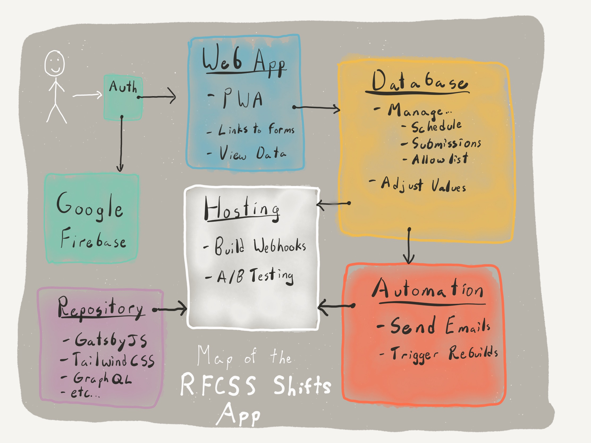
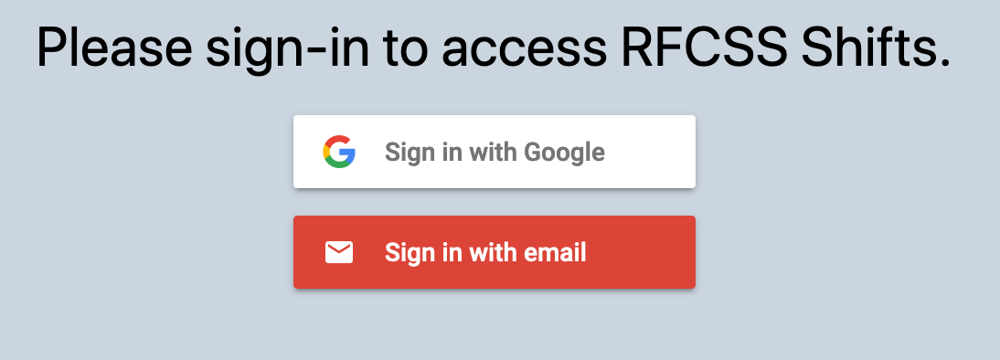
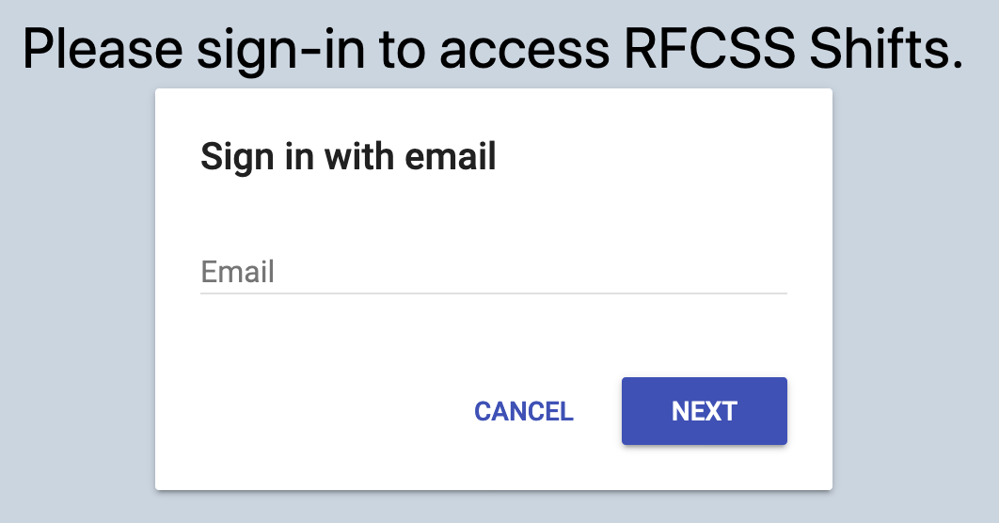
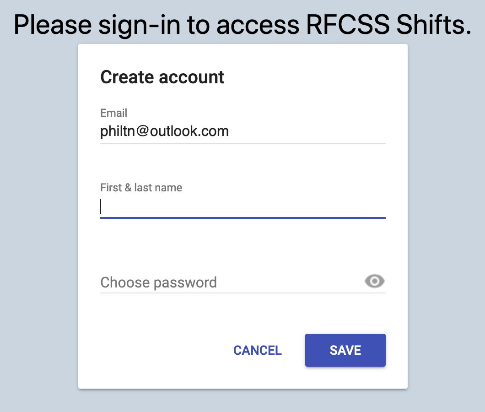
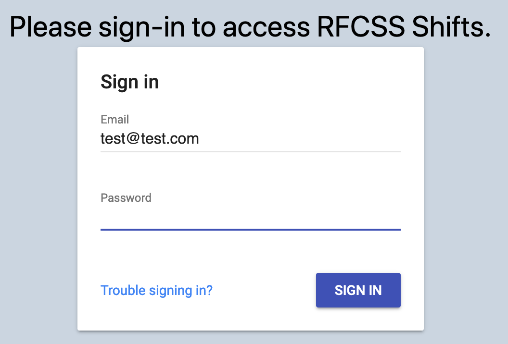
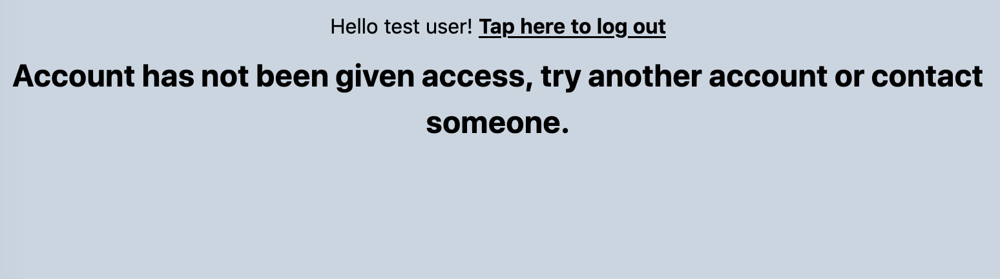
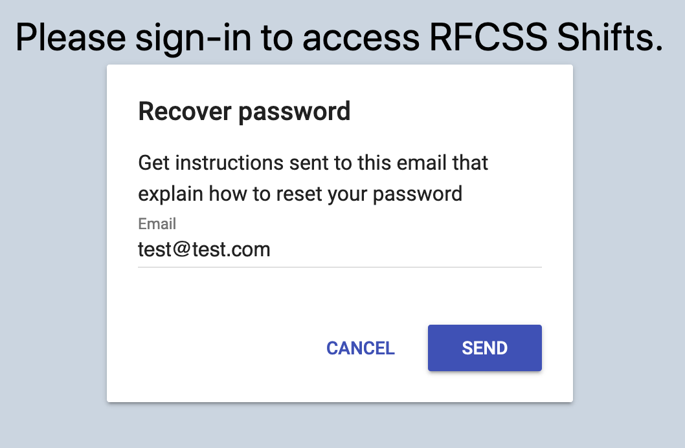
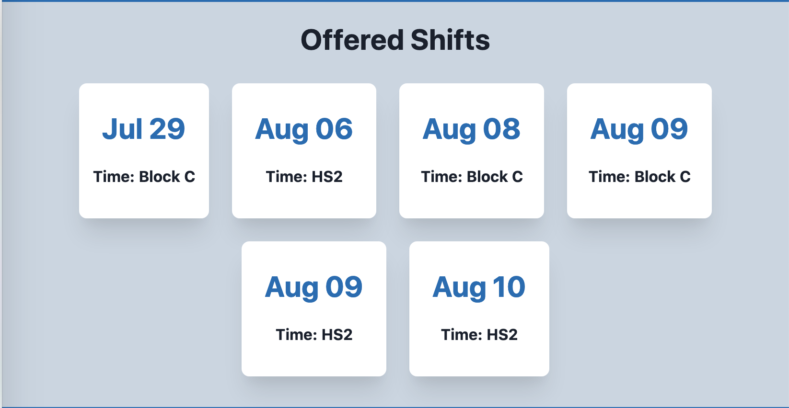

Introduction
This is a manual for the RFCSS Shifts site. Inside you will find a guide on how to get started, as well as a description of the components and what to do if something breaks.
It is important to note that if a user is having problems with the website, it is almost a guarantee that it can be fixed by reading the instructions in this manual, so make sure to do that before you seek help elsewhere!
The guide to getting a HCA set up on the website can be found here.
Quick Start
The guide to getting set up on the website side can be found here.
The rest of the manual will be for administration.
Map of RFCSS Shifts
 This is a map of all the components that make up RFCSS Shifts. The most important ones to take note of are the web app, the database, and the automation. The rest are taken care of by the software engineer(s). We will quickly go over these components in the quick start.
The general idea of the web app, database, and automation is as follows:
- The database is the "meat" of RFCSS Shifts which holds all of the info
- The web app is a "camera lens" that looks at the info and presents it in a convenient way
- The automation contains all of the "actions" that does things like tell the web app to build itself when there is new info in the database, or email someone when there is a new shift.
Web App
The web app is the visual, the website that let's you see what the database holds. Without it we would have to use the database to try and make sense of who has what shift, which would not be convenient!
You can find more information on the website in the Web App Component section, and can see the website itself at shifts.rimbeyfcss.com.
Database (Airtable)
The database holds the information for the website, and without it the website would not work!
You can access the database by clicking here or by searching in your web browser for "Airtable". Log in if it asks you to do so, and then click on "FCSS Scheduling".
Information is organized by tables and views. For more information on how Airtable works and how to use the database, there are resources linked in the Database Component section.
Automation
Aside from submitting the forms for shift requests, automation takes care of all of the website's "actions". This includes all emails, and re-building the website when there is new information in the database.
You can find the automation service at automate.io.
If you ever need to change how the emailing system works, or want to change when the site rebuilds, you can do so at the link above.
WARNING: Be careful when making changes to the automation. These changes do not require expert knowledge, but they do require patience and a clear understanding of what each automation does. If unsure, ask for a second opinion or help from someone else in the office.
Web App Component
The web app component is the website that displays the information in the database. Specifically, it is built using something called a "static site generator", meaning the site does not update in real-time and instead is rebuilt from scratch every time it is told to do so.
This leads to significant cost reductions since other than the times it is build it uses no resources and is simply a collection of "dumb" documents!
You may find the web app here.
Benefits and limitations of the web app's design
The pros of a static site are:
- Faster to browse, doesn't feel "slow" or unresponsive.
- Very cheap to run, as the site doesn't actually do anything 99% of the time
- Simpler in design, as you don't need to worry about scenarios where many people are accessing the site at once, or preventing overload.
The cons of a static site are:
- Limited in functionality, particularly "real-time" events. For example, messaging services.
- Rebuilds can take a few minutes, meaning that if the site is told to rebuild itself to display information, it will still take a few minutes to rebuild itself first. Again, this makes it not ideal for "real-time" scenarios.
Managing your Account
To access the web app you must first sign in. You may do so by visiting shifts.rimbeyfcss.com and clicking login. You should then see something similar to the image below:

You may then select the appropriate sign in method (select sign in with email if unsure).

After submitting your email, you will either see an option for creating an account or for signing into an existing account, depending if you have already made an account with that email:
 If you are creating a new account using your email (and not Google), you will need to check your email account for a verification email sent to you. If you cannot find it check in your spam folder.
After verifying your account, sign out and back in again.

If you see the following page after signing in, contact administration:

Otherwise, you should not see the web app! If you forgot your password, click the "trouble signing in?" text at the bottom of the sign in page, as shown below:

Viewing Shifts
Assuming you are now signed in, you may view information about upcoming shifts at shifts.rimbeyfcss.com. READ THE TEXT AT THE TOP. There are currently 3 sections:
Start Times
This is a section which displays information about the start times for each shift.
Offered Shifts
This section shows which shifts are being offered in the next 4 weeks. Click on them and submit the form that appears to take them.
Current Schedule
The current schedule, which has been approved by administration. This schedule does not include requests that have not been approaved yet.
Requesting Shift Changes
You may submit a request using one of two methods:
Link in the header
You may click "Submit Shift" at the top of the site, and then fill out the form to offer or take a shift.
Link on an offered shift
 You may also click on an offered shift and it will prefill the submission form with the shift's info. This may be alittle more convenient for taking shifts than the above option.
Example Usage Scenario
Shift is offered
Bob is normally supposed to work HS1 on the 25th of August, however he can't because he has an important appointment at the nearby bar.
Bob thus needs to offer his shift so someone else can replace him. He first visits shifts.rimbeyfcss.com, signs in, clicks the "Submit Shift" at the top, fills in and submits the form, and then waits for administration to process it.
Offered shift is processed
Becky works as administration and sees the request appear in the "Unprocessed Requests" view in the "Requests" table. She checks the current schedule on shifts.rimbeyfcss.com, see that bob is indeed the current possessor of that shift, and accepts the request.
Shift is taken
Around 5-15 minutes later, The site is updated and emails are sent out to HCAs letting them know that the shift is being offered. Burt sees the shift being offered and decides he could use some more hours. He clicks on the shift in the "Offered Shifts" section, fills in and submits the form, and then waits for his request to be processed. Barry also does the same, albeit a few minutes later.
Taken shift is processed
Becky now sees that Burt and Barry both want to take the shift. She checks the website to make sure that shift is being offered, and accepts Burt's request but rejects Barry's request since Burt submitted his first.
Had Becky accepted both, this would have resulted in an error, which would then appear on the website.
Database Component
The Database component currently uses Airtable to store the data for the site. This makes the site far cheaper to host, and disconnects the data and visual components for better reliability and upgradeability.
WARNING: Do not rename or otherwise remove the fields (ie. the column headers), tables, or views. Otherwise the web app will not know where to look for the information! Adding fields, tables, or views is fine.
How to Use Airtable
To learn more about Airtable, please look at their Support Section for up-to-date information. This manual will try to cover the necessities, but the guides here may eventually become outdated.
Here are the essentials:
Tables
The Database contains 5 tables:
- Schedule: The default schedule for HCA staff.
- Requests: Requests for shift changes.
- StartTimes: Start times for each shift.
- Values: Stored values for other tables to reference. If you wish to adjust the payroll start period, you may do so here.
- Feedback: Feedback sent through the site.
- AllowList: Emails whose accounts are allowed onto the site.
Processing Requests
To process unprocessed requests, navigate to the "Requests" table, and switch to the "Unprocessed" view. You can then see all requests which have no yet been given a status.
To process them, change their status to either "Rejected" or "Accepted" by clicking on the cell for that row. Once you do so, the row should disappear (since it is no longer unprocessed), and it will appear in the "Processed" view.
If you ever wish to view a certain category of requests, please use the corresponding views, or make your own! For example, if you wish to see all requests, change the view to all. To see more information on views, see the resources linked in the first page of the Database Component section.
Filtering and sorting happens automatically, so as soon as you change the information in a request (such as accepting it), it may cause the request to disappear from the view.
The Default Schedule
You can access the default schedule by clicking on the "Schedule" table.
Here, you can modify the cells to change who normally works these shifts. Sometimes a name won't appear in the list, in which case you need to add it for that column. Make sure the name is typed exactly, capitalization and all. Avoid having any empty cells, if you wish to show that no one is working that shift, enter something like "None".
Week 1 = first week after payroll, Week 2 = second week after payroll.
Day 1 = Sunday.
Payroll is determined to be every 2 weeks after the date specified under the "Rotation Start Date", in the "Values" table.
Warning: Changing a shift for one week will copy that change to all other weeks that correspond to it. For example, change "Block A" on Week 1, Day 1, will change the default HCA for all Block As on the first day after payroll.
AllowList
The allow list holds a list of accounts that are allowed to access the website, along with whether they are an admin or not.
Avoid having any empty rows, as they may break the site.
StartTimes
The StartTimes table is simply a table of shifts and their start times. Technically these start times are not restricted to numbers or times; any text you put here will appear in the corresponding box on the web app.
Avoid having any empty cells, if there are no start times for a shift, put something like "None".
Example Usage Scenario
A previous example showing how shifts might be processed is in the Web App Component section.
- If a new staff member is added and wishes to access the site, add their name and email to the "AllowList" table.
- If a HCA's regular shift is being changed, change it in the "Schedule" table.
Other Components
The other components of the RFCSS Shifts service won't need to be accessed as often, and caution should be exercised when modifying them. If unsure, have a few people do it with you as they may catch errors that you do not.
The other components consist of:
- Automation
- Hosting
- Repository
- Authentication (Google Firebase)
Automation
The automation service can be accessed at automate.io. Here, you may change the actions made by the website, as well as add your own.
If you decide to change the existing actions, please be careful when dealing with the rebuilds.
If you have any questions regarding how Automate.io works, refer to their documentation here.

Hosting
Hosting is done through Vercel, which is the service that receives orders from the Automation component to rebuld the site.
This portion actually runs the program to build the site and then display it.
Other than knowing how it works, there is no need for you to access or work with this component.
Repository
This is the "code" for the website, ie. what tells the Hosting component how to build the site and what to display when it's built.
This code is hosted on Github, and is retrieved by the Hosting component whenever it needs to rebuild the site.
Frameworks
It uses something called GatsbyJS as the static site generator, which defines how the program is structured as well as what it does. The the link above for more information.
Data
GraphQL is used to pull information from the database when it is built. This works by connecting the code to the database using a key, and then accessing the Base and appropriate Tables and Views based on their names. More info can be found here.
Thus, if a View or Table's name on the database is changed, the data will likely be inaccessible!
Visuals
The visuals are done using TailwindCSS, which is a beautiful framework for building visuals for a web app. For example, you can see some of the colors used in the web app here.
Authentication
Authentication is handled through Google Firebase, which is a service by Google which offers accounts and sign in authentication.
Everything related to accounts and passwords is done through Google Firebase, and has no other connection to the website or database.
Other than knowing how it works, there is no need for you to access or work with this component. Recovering lost passwords etc. can be entirely done by individual account holders.
Troubleshooting
This section covers some tips for troubleshooting errors that may occur in the site.
The most common sign of an issue are:
- The site refuses to update / load
- A shift is incorrectly displayed
Both of these issues can almost always be solved by:
- Taking a look at the corresponding data in the "Requests" and "Schedule" tables on the database. If any of the requests are in a strange order (for example the taken shift was submitted before the offered shift, or the original offer was not from the original owner of the shift), fix those issues first by either rejecting the appropriate requests or changing their data.
- Check the spelling of names, etc. If a name has so much as a space or different capitalization it will not be considered the same name! Likewise, if two names are spelt very similarly it might be best to add a last name so that they are not mixed up.
- Check if any row in any table is empty. If so, delete it. If a cell in the Schedule, StartTimes, or Values is empty, fill it with the appropriate value.
Then wait a few minutes for the site to rebuild, or press the rebuild button on the site if you are an admin.
If you are still having issues, see the remaining pages in this section for more help.
Connection between the components
Sometimes there can be a failure between the components. For example, the Automation component may have been run too many times (although that is unlikely) or perhaps the payment method was declined and the automation no longer works.
The first place to look for when an issue is present, is the database. See the first page in the Troubleshooting section.
If the website is still updating but is showing incorrect data, this is almost guaranteed to be an issue within the database, and is completely fixable without having to higher an expert.
If the website no longer updates, this may be an indication that another component has failed. The first place to look is the Automation component. Check and see when the last time each automation ran, and see if any of them seem strange.

If the automation system seems to be running fine (eg. the site rebuilds ran recently), but the site does not appear updated, then you may need an expert to look at the problem.
Deprecation within the site generator
If the advice in the previous sections have not helped you, then the issue may be beyond your control.
In short, you have checked that:
- The database does not contain empty rows / views, or empty cells, and all of the requests are in proper order
- The automation system is still running fine (the last rebuild was very recent)
- The site is either not loading at all, or not updating. Again, if it is simply showing incorrect data then the problem is almost certainly within the database and can be easily fixed.
If this is the case, then the problem is likely due to the hosting or code withint he repository, which are beyond your control. See the next section for how to get help for this issue.
Resources for finding developers
Before finding an external developer, first contact the author of this project so that they may take a look at the issue or at least supervise the work done by the hired developer.
Sites
The following sites can be useful for finding developers to hire in case of necessary maintenance / improvements:
You can find an extensive list of recommendations here.
Required Qualifications
You will be looking for a developer who has experience with:
- GatsbyJS OR (GraphQL and React)
- Static site generators
- Site hosting and deployment
- Webhooks